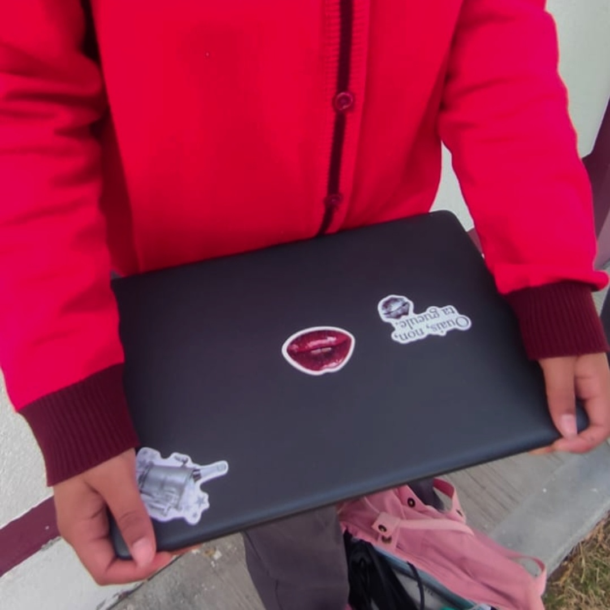
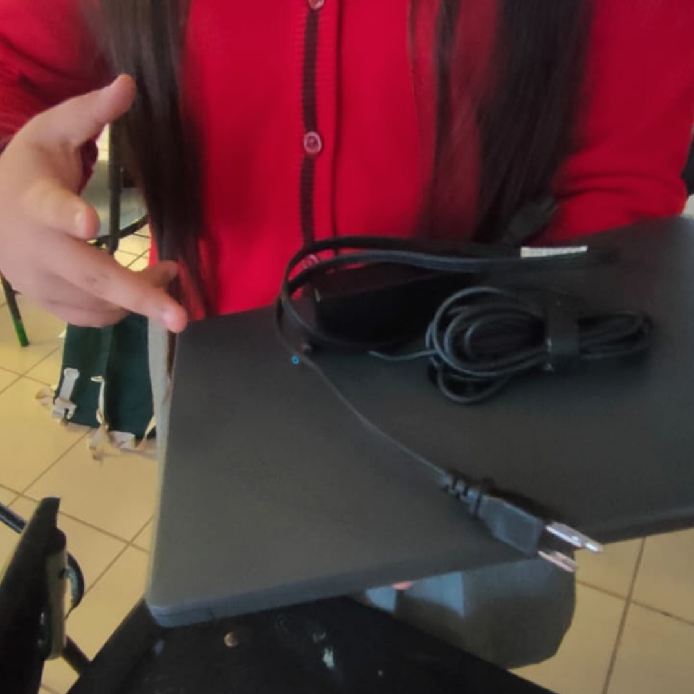

Mantenimiento Preventivo.
Mantenimiento preventivo enfocado en dar un mayor tiempo de vida.
Mantenimiento preventivo, correctivo y soporte técnico bajo encargo.
Cotizar mi servicioMantenimiento preventivo enfocado en dar un mayor tiempo de vida.
Mejoras de equipo de computo como: Memoria RAM, Almacenamiento etc.
Mantenimiento preventivo y soporte tecnico para optimizar el equipo.
Instalación de programas de forma legal según lo requiera.
Venta de equipos tipo laptop bajo pedido.
Normalmente el servicio preventivo completo se realiza en un lapso de 24 a 48 horas, según la complejidad y requerimientos específicos de tu equipo.
¡Sí! Todos nuestros trabajos de mantenimiento y soporte técnico cuentan con garantía directa para asegurar tu total tranquilidad y óptimo desempeño.
Para laptops solo necesitamos el equipo y su cargador. Para computadoras de escritorio (PC) únicamente la torre/CPU.
Si nunca se realizó mantenimiento, el polvo acumulado puede reducir la eficacia del flujo de aire en un 25% afectando al rendimiento general.
Elimina zumbidos molestos causados por polvo o desgaste en ventiladores, logrando un entorno silencioso para trabajar o jugar.
Todo equipo genera calor, más aun si nunca se le hizo algún mantenimiento al equipo, lo que literalmente la ahoga, es tiempo de un cambio de pasta.
Evita reinicios inesperados, apagones térmicos de emergencia y fallas irreparables en la tarjeta madre o procesador.
En varios casos se instalan herramientas “gratis” lo que genera procesos que consumen a tu equipo poco a poco, además de la limpieza y optimización.
↓Cotiza tu mantenimiento ↓
CONTÁCTANOS
"Mi laptop estaba lenta, gracias a Mystech, pudieron optimizar mi equipo, excelente servicio!"

"Mi computadora se calentaba y trababa mucho, gracias a Mystech, pudieron hacerla mucho más rápida y rinde mejor. muy recomendado"